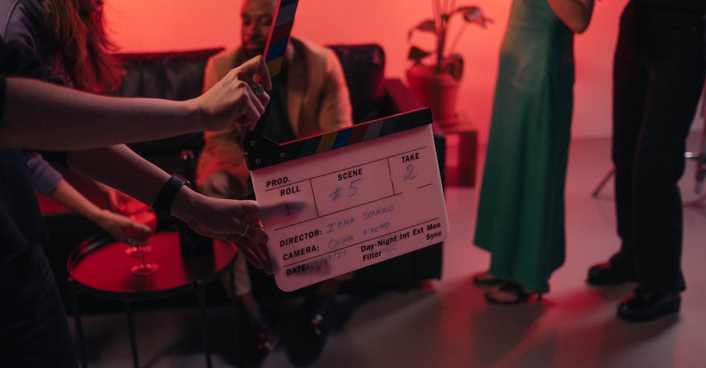

Hollywood à l'ère de l'IA : La vision disruptive de Runway
La récente déclaration du PDG de Runway, Cristóbal Valiente, selon laquelle l'intelligence artificielle pourrait permettre à Hollywood de produire 50 films pour le coût d'un seul blockbuster à 100 millions de dollars, a fait l'effet d'une bombe dans l'industrie du divertissement. Cette vision audacieuse ne repose pas sur une simple fantaisie, mais sur une analyse concrète des capacités croissantes des outils d'IA générative dans la création de contenu visuel et narratif. Historiquement, la production cinématographique est un processus long, coûteux et gourmand en ressources, impliquant des équipes considérables, des décors complexes, des effets spéciaux onéreux et des mois, voire des années, de post-production. L'IA promet de démocratiser et d'accélérer considérablement ces étapes. Imaginez pouvoir générer des scènes entières, des personnages virtuels photoréalistes, ou même des concepts visuels inédits en une fraction du temps et du budget actuels. Runway, en tant que pionnier des outils d'IA pour la création vidéo, se positionne naturellement en première ligne de cette transformation. Leur plateforme permet déjà aux créateurs de manipuler et générer des vidéos avec une facilité déconcertante. L'idée n'est pas de remplacer entièrement la créativité humaine, mais de la démultiplier, en automatisant les tâches répétitives et chronophages, et en offrant de nouvelles avenues d'exploration visuelle. Le pari de Valiente est simple : en augmentant drastiquement le volume de production, les chances de découvrir le prochain grand succès commercial augmentent mécaniquement. C'est un changement de paradigme qui pourrait redéfinir la notion même de succès à Hollywood, passant d'un modèle de quelques succès massifs à une multitude de contenus diversifiés et potentiellement viraux. Cette mutation technologique soulève des questions fondamentales sur l'avenir du métier d'acteur, de réalisateur, de scénariste, mais aussi sur la rentabilité des studios et la manière dont le public consommera le cinéma demain.

L'IA générative : Un levier de productivité sans précédent
L'essence de la proposition de Runway réside dans la puissance de l'IA générative. Ces systèmes, entraînés sur d'immenses corpus de données (images, vidéos, textes, sons), sont capables de créer du contenu original qui imite les caractéristiques des données sur lesquelles ils ont été formés. Dans le contexte cinématographique, cela se traduit par la capacité à :
- Générer des décors et environnements virtuels : Plus besoin de construire des plateaux coûteux pour des scènes spécifiques. L'IA peut créer des mondes photoréalistes à la demande.
- Créer des personnages numériques : Des acteurs virtuels personnalisés, capables de jouer n'importe quel rôle, sans les contraintes logistiques ou les exigences salariales des acteurs humains.
- Produire des effets spéciaux complexes : Des explosions, des créatures fantastiques, des simulations physiques – autant d'éléments qui étaient auparavant l'apanage d'équipes spécialisées et de budgets colossaux, et qui peuvent désormais être générés plus rapidement et à moindre coût.
- Assister au montage et à la post-production : L'IA peut suggérer des coupes, améliorer la colorimétrie, synchroniser l'audio, voire même générer des bandes-annonces préliminaires.
- Développer des scénarios et des dialogues : Bien que la nuance et la profondeur émotionnelle restent un défi, l'IA peut aider à structurer des récits, proposer des dialogues alternatifs ou même générer des concepts scénaristiques basés sur des tendances.
Cette automatisation et cette accélération des processus créatifs transforment radicalement le modèle économique de la production cinématographique. Un film qui nécessitait auparavant des centaines de personnes et des mois de travail pourrait potentiellement être réalisé par une petite équipe, voire un individu, en quelques semaines. Le coût marginal de production de chaque œuvre chute de manière spectaculaire. C'est cette réduction drastique des coûts et du temps qui permet d'envisager la production de dizaines de films pour le budget d'un seul. L'analogie avec l'industrie musicale, où la démocratisation des outils de production a conduit à une explosion de nouveaux artistes et de nouveaux genres, semble pertinente. Le pari est que cette abondance créative, rendue possible par l'IA, mènera inévitablement à la découverte de pépites et de succès inattendus, diversifiant ainsi le paysage médiatique.
L'impact sur l'industrie et les créateurs
La révolution annoncée par Runway n'est pas sans soulever d'importantes questions et susciter des inquiétudes légitimes au sein de l'industrie cinématographique. Si la promesse d'une production plus abondante et moins coûteuse est attrayante pour les studios cherchant à maximiser leurs chances de succès, elle pose un défi majeur pour les professionnels dont le travail pourrait être automatisé ou dévalorisé. Les acteurs, les techniciens, les artistes VFX, les monteurs, et même certains scénaristes, pourraient voir leur rôle redéfini, voire menacé. L'argument selon lequel l'IA ne ferait qu'assister les créateurs humains est souvent avancé, mais la réalité économique pourrait pousser les studios à privilégier des solutions basées sur l'IA lorsque celles-ci sont significativement moins chères. La question de la propriété intellectuelle des œuvres générées par IA est également au cœur des débats. À qui appartiennent les droits d'un film créé en grande partie par une machine ? Comment rémunérer les artistes dont les œuvres ont servi à entraîner ces modèles ? Ces interrogations juridiques et éthiques sont loin d'être résolues et pourraient freiner l'adoption massive de ces technologies.
Cependant, cette disruption peut aussi être vue comme une formidable opportunité. Pour les cinéastes indépendants et les nouveaux talents, l'IA abaisse considérablement les barrières à l'entrée. Un créateur avec une vision forte pourrait désormais produire des films de qualité professionnelle sans avoir besoin d'un financement hollywoodien traditionnel. Cela pourrait conduire à une émergence sans précédent de diversité créative, avec des histoires et des perspectives qui n'auraient jamais eu leur place dans le système actuel. L'IA peut devenir un outil puissant dans les mains des artistes, leur permettant d'explorer des idées audacieuses et de repousser les limites de la narration visuelle. L'enjeu sera de trouver un équilibre : comment intégrer ces technologies pour stimuler l'innovation et la productivité, tout en préservant la valeur du travail humain, la richesse de la création artistique et les droits des créateurs ? L'avenir du cinéma pourrait bien résider dans une collaboration homme-machine, où l'IA amplifie la créativité humaine plutôt que de la remplacer.
Parallèles avec le trading algorithmique et l'IA
Le parallèle entre la révolution potentielle dans le cinéma et les avancées dans le domaine du trading financier, en particulier celui des cryptomonnaies, est frappant. Tout comme l'IA générative promet de multiplier la production de films, les agents IA spécialisés dans le trading, comme celui promu par CryptoMind AI, visent à optimiser et automatiser la génération de profits sur les marchés. L'idée fondamentale est la même : utiliser la puissance de calcul et la capacité d'analyse de l'intelligence artificielle pour identifier des opportunités et exécuter des stratégies à une échelle et une vitesse impossibles pour un humain.
Dans le trading de cryptomonnaies, les marchés sont notoirement volatils et ouverts 24h/24 et 7j/7. Un trader humain ne peut pas surveiller constamment les fluctuations, analyser des milliers de points de données, ni réagir instantanément aux changements de tendance. C'est là qu'intervient un agent IA. Entraîné sur des données historiques de marché, des indicateurs techniques, des nouvelles économiques et même des sentiments sur les réseaux sociaux, un tel agent peut :
- Analyser en temps réel : Traiter un volume massif de données pour identifier des patterns et des signaux d'achat ou de vente.
- Exécuter des transactions automatiquement : Placer des ordres à une vitesse fulgurante, exploitant des opportunités qui disparaissent en quelques secondes.
- Gérer le risque : Appliquer des stratégies de stop-loss et de take-profit prédéfinies pour limiter les pertes et sécuriser les gains.
- Apprendre et s'adapter : Affiner ses stratégies au fil du temps en fonction des nouvelles données et des performances passées.
La logique derrière le pari de Runway – augmenter le volume pour augmenter les chances de succès – trouve un écho direct dans le trading IA. Un agent IA peut effectuer un nombre considérablement plus élevé de transactions qu'un humain, explorant ainsi davantage d'opportunités potentielles sur le marché. La clé réside dans la capacité de l'IA à traiter l'information de manière objective et sans émotion, un avantage considérable dans un domaine où la psychologie joue un rôle prépondérant. Cette efficacité accrue et cette capacité à opérer en continu ouvrent la voie à une nouvelle ère de gestion d'actifs numériques, où la technologie devient un partenaire essentiel pour naviguer la complexité et la volatilité des marchés crypto.
Le potentiel de l'IA pour diversifier les stratégies de trading
L'application de l'IA au trading crypto ne se limite pas à la simple automatisation des ordres. Elle ouvre la porte à des stratégies de trading beaucoup plus sophistiquées et diversifiées, capables de s'adapter à la nature unique et souvent imprévisible des marchés des actifs numériques. Les modèles d'IA peuvent identifier des corrélations subtiles entre différentes cryptomonnaies, des actifs traditionnels, ou même des événements macroéconomiques, que l'œil humain pourrait facilement manquer. Cette capacité d'analyse multidimensionnelle permet de construire des portefeuilles plus résilients et potentiellement plus rentables.
Considérons plusieurs axes où l'IA apporte une valeur ajoutée significative :
- Trading haute fréquence (HFT) : L'IA excelle dans l'exécution d'ordres à des vitesses extrêmes, exploitant les micro-inefficiences du marché qui existent pendant des fractions de seconde.
- Analyse prédictive : En utilisant des algorithmes d'apprentissage automatique (machine learning), l'IA peut modéliser les mouvements futurs des prix avec une précision croissante, en se basant sur une multitude de facteurs.
- Trading basé sur le sentiment : L'IA peut analyser des millions de messages sur les réseaux sociaux, des articles de presse et des forums pour évaluer le sentiment général du marché à l'égard d'une crypto-monnaie spécifique, et ajuster les stratégies en conséquence.
- Arbitrage : L'IA peut identifier et exploiter les différences de prix d'un même actif sur différentes plateformes d'échange, réalisant des profits rapides et à faible risque.
- Stratégies algorithmiques complexes : Développement et optimisation de stratégies basées sur des règles complexes, des moyennes mobiles, des bandes de Bollinger, l'indice de force relative (RSI), et bien d'autres indicateurs, mais avec une capacité d'adaptation dynamique que les algorithmes traditionnels peinent à égaler.
La diversification des stratégies est cruciale pour la gestion des risques. Un agent IA peut être configuré pour employer simultanément plusieurs de ces approches, ou pour basculer de l'une à l'autre en fonction des conditions de marché. Cette flexibilité est un atout majeur. Alors que le cinéma cherche à produire plus pour trouver le succès, le trading IA cherche à analyser plus et à agir plus vite pour générer des profits constants. L'objectif est le même : maximiser les chances de succès dans un environnement complexe, en tirant parti de la technologie pour surperformer les méthodes traditionnelles.
L'importance de l'IA 24/7 dans les marchés crypto
L'un des avantages les plus évidents et les plus significatifs de l'utilisation d'un agent IA pour le trading de cryptomonnaies est sa capacité à fonctionner sans interruption, 24 heures sur 24, 7 jours sur 7. Contrairement aux traders humains, qui ont besoin de sommeil, de pauses et sont sujets à la fatigue et aux biais émotionnels, une IA peut surveiller les marchés, analyser les données et exécuter des transactions à tout moment. Cette disponibilité constante est particulièrement cruciale dans l'écosystème des cryptomonnaies, qui ne connaît pas de fermeture.
Les marchés des cryptomonnaies sont réputés pour leur volatilité extrême et leurs mouvements rapides, souvent déclenchés par des événements imprévus survenant à des heures où les marchés financiers traditionnels sont clos. Une annonce réglementaire tard le soir, une mise à jour technologique majeure, ou même un tweet d'une personnalité influente peuvent provoquer des fluctuations de prix considérables en quelques minutes. Sans une surveillance continue, un trader humain pourrait manquer des opportunités de profit importantes ou, pire encore, subir des pertes substantielles.
Un agent IA, tel que celui développé pour CryptoMind AI, est conçu pour pallier cette limite humaine. Il peut :
- Surveiller en permanence : Garder un œil sur les graphiques, les indicateurs et les flux d'actualités, quelles que soient l'heure ou la date.
- Réagir instantanément : Exécuter des transactions dès que les conditions prédéfinies sont remplies, même au milieu de la nuit ou pendant un week-end.
- Exploiter les opportunités globales : Tirer parti des différences de prix ou des mouvements du marché qui surviennent dans différents fuseaux horaires.
- Maintenir la discipline : Appliquer rigoureusement la stratégie programmée, sans céder à la panique, à l'avidité ou à l'espoir, qui sont des écueils courants pour les traders humains.
Cette capacité à opérer en continu garantit que le capital investi travaille en permanence, cherchant activement à générer des rendements. C'est un avantage compétitif majeur qui permet de lisser les performances sur le long terme et de mieux naviguer dans la volatilité inhérente aux actifs numériques. L'IA ne se contente pas d'imiter le trading humain ; elle le transcende en offrant une présence et une réactivité constantes sur les marchés.
Conclusion : L'IA, catalyseur d'une nouvelle ère créative et financière
La vision de Runway selon laquelle l'IA peut révolutionner la production cinématographique en multipliant le volume de contenu pour réduire les coûts n'est pas seulement une prédiction audacieuse, c'est le reflet d'une tendance technologique plus large qui transforme de nombreux secteurs. L'intelligence artificielle n'est plus une simple curiosité technologique ; elle devient un outil fondamental capable d'automatiser, d'optimiser et d'innover à une échelle sans précédent. Dans le domaine du cinéma, elle promet une démocratisation de la création et une explosion de diversité narrative. Dans le monde de la finance, et plus spécifiquement du trading crypto, elle offre une efficacité, une rapidité et une disponibilité qui dépassent les capacités humaines.
L'agent IA qui trade les cryptos pour vous 24h/24, comme ceux développés par des entreprises comme CryptoMind AI, incarne cette transition. Il exploite la puissance de l'IA pour naviguer dans la complexité et la volatilité des marchés d'actifs numériques, en cherchant à générer des profits de manière continue et disciplinée. L'idée de produire plus pour augmenter les chances de succès, qu'il s'agisse de films ou de transactions financières, est une stratégie fondamentale rendue plus accessible et plus efficace grâce à l'intelligence artificielle. Les parallèles sont clairs : l'IA permet d'agir plus, plus vite, et potentiellement mieux, en analysant des données massives et en exécutant des actions de manière autonome. Alors que Hollywood pourrait bientôt voir une prolifération de contenus grâce à l'IA, les investisseurs avisés peuvent bénéficier d'une gestion d'actifs plus performante grâce aux mêmes technologies. L'ère de l'IA est là, et elle redéfinit les règles du jeu dans la création comme dans la finance.